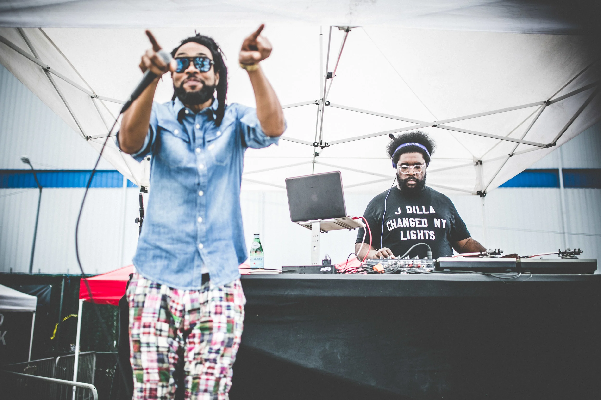
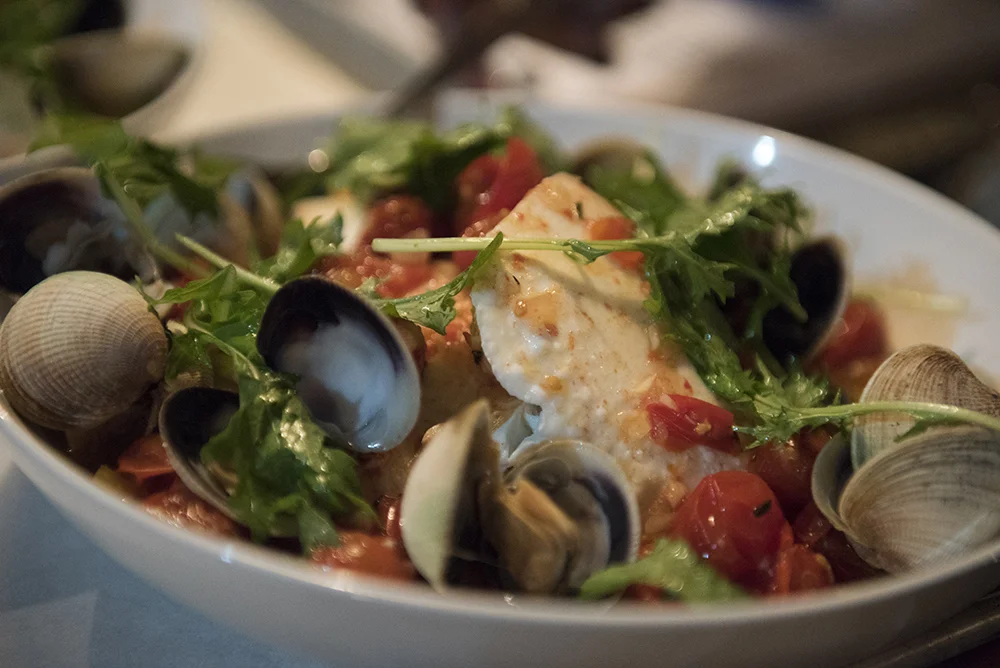
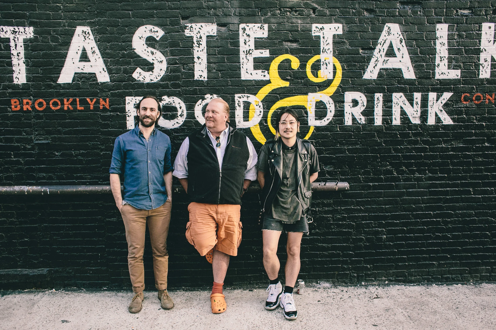
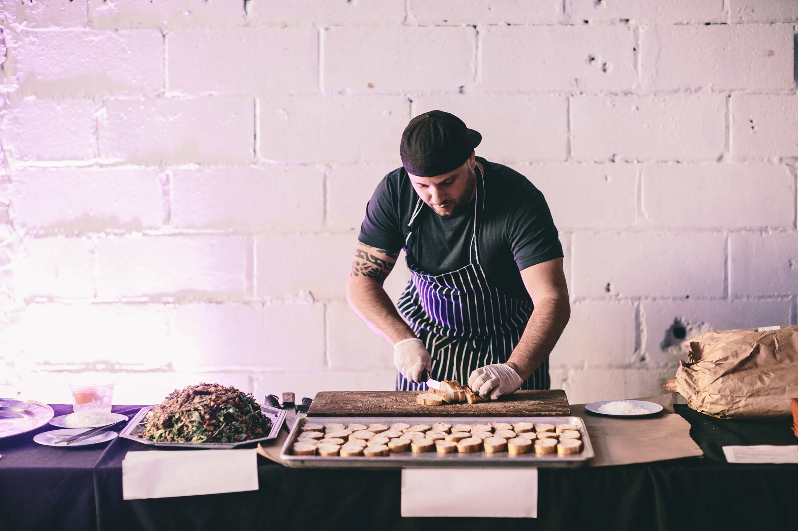
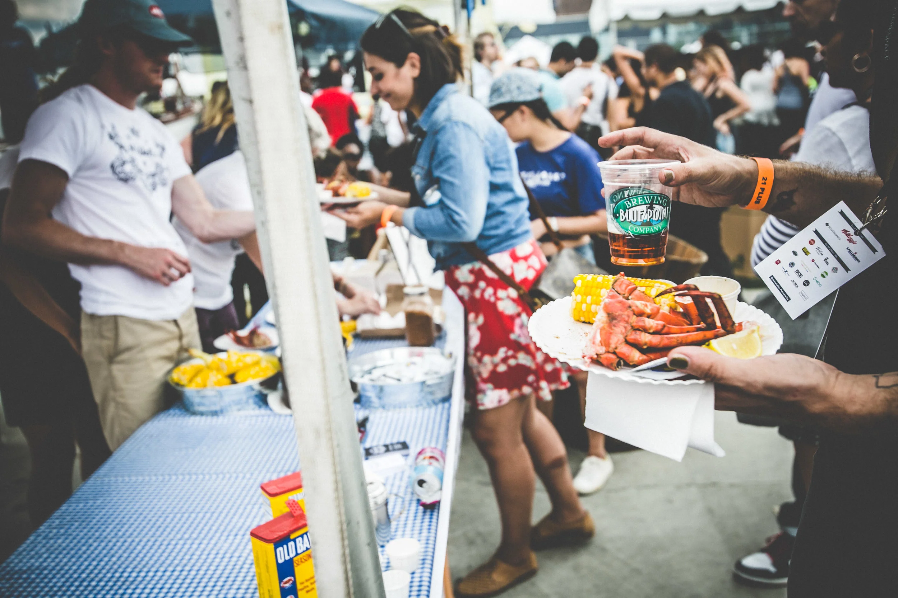
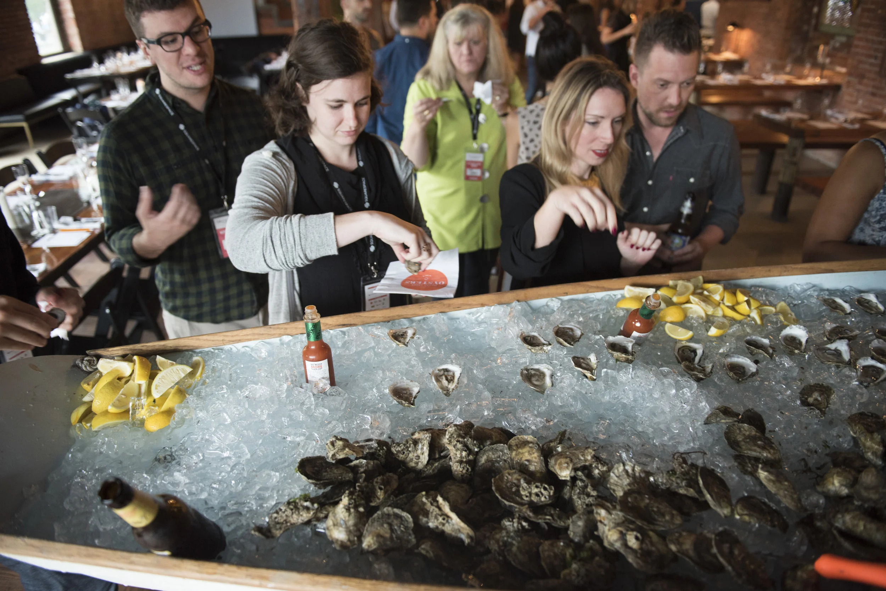
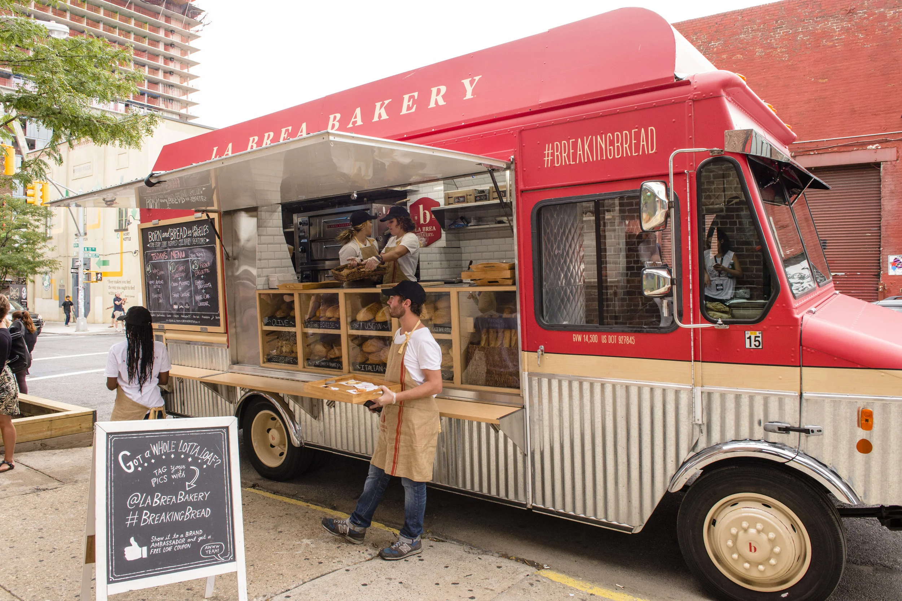
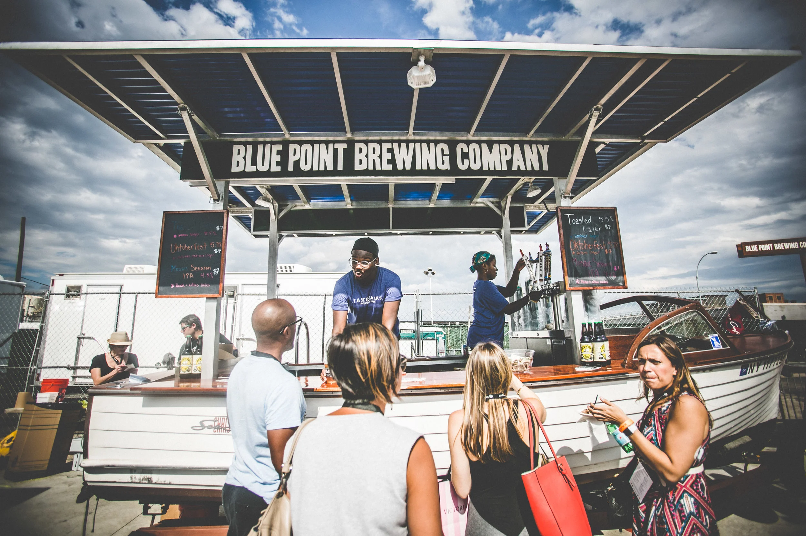
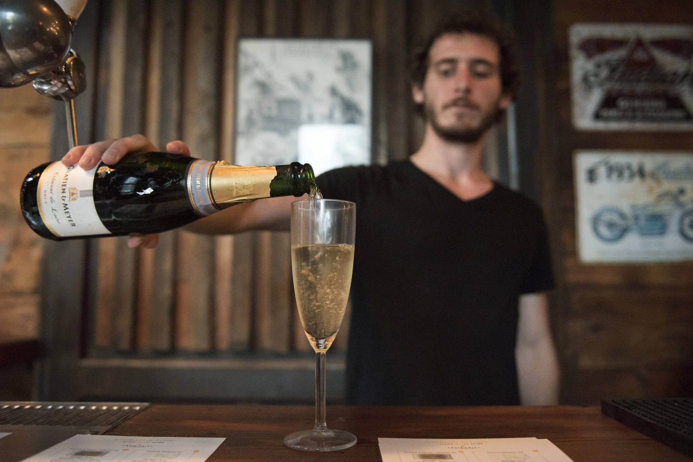
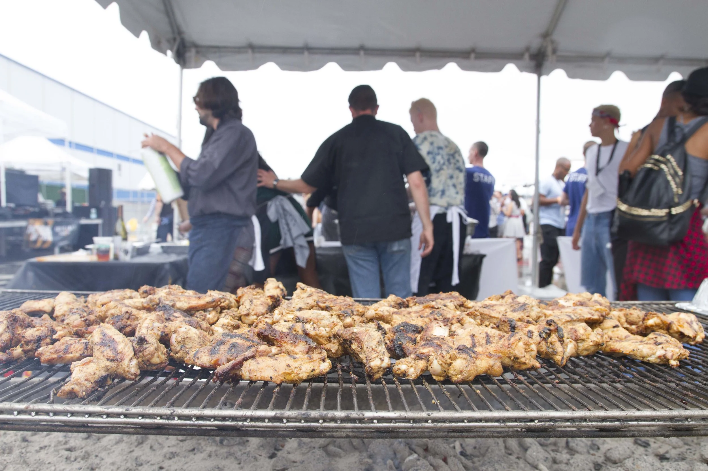
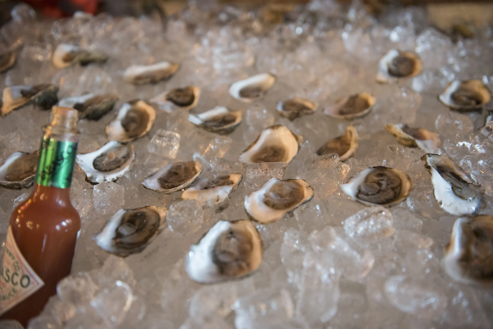

Food and Culture. Not Just Foodie Culture.
Brooklyn · Chicago · Los Angeles · Miami · 2013–2017
Taste Talks launched in Brooklyn and grew into a national food festival spanning four cities. Curated by some of the most influential figures in food — April Bloomfield, Danny Bowien, Questlove, Sean Brock, Kelis, Wylie Dufresne — and featuring everyone from Mario Batali to Action Bronson. The signature All-Star BBQ paired world-class chefs with pop culture icons, and the conference brought together the brightest minds in food, media, and innovation.











Brooklyn · September 13–15 · Inaugural Year
Curator: April Bloomfield (The Spotted Pig)
East River State Park. Two sessions (1–4 PM and 5–8 PM) with 25 celebrity chefs cooking collaboratively outdoors.
April Bloomfield, Dan Barber, Mario Batali, Nate Smith (Allswell), Sean Rembold (Reynard), Eli Sussman (Mile End Deli), Sam Anderson (Salvation Taco), Frank Castronovo (Prime Meats)
International chefs prepared an impromptu outdoor meal using locally sourced Brooklyn ingredients.
Alessandro Porcelli (Cook It Raw founder), Roberto Solis (Nectar, Mérida), Scott Vivian (Beast, Toronto), David Santos (Louro), Connie DeSousa & John Jackson (Charcut, Calgary), Anthony Lombardo (1789, DC), Kevin Patricio (San Sebastián)
Wylie Dufresne, Questlove, Andrew Tarlow, The Mast Brothers, Dave 1 of Chromeo
Brooklyn (Sept 12–14) + Chicago (Oct 3–5) · First Expansion
Brooklyn: Danny Bowien (Mission Chinese)
Chicago: Paul Kahan (Blackbird, Avec)
East River Park. 20+ chefs. Action Bronson paired with Michael White to create Porchetta "Kra Prow" Tigelle — Thai-spiced porchetta with crispy watercress.
Action Bronson & Michael White (Osteria Morini), Mario Batali, Christina Tosi (Milk Bar), Dale Talde, Andy Ricker (Pok Pok), Brooks Headley (Del Posto), Lee Tiernan
Action Bronson's MUNCHIES/Vice web series debuted at Taste Talks — it went on to become a major Viceland TV show.
Inaugural edition. Food startups, innovation showcase, and sampling. The beginning of Taste Talks as a food-tech platform.
"From Indie Bands to Grandpa's Buick: What is Buzz?" — moderated by Mario Batali with Christine Muhlke, Kate Krader, Ken Friedman, Craig Kanarick.
Alex Guarnaschelli, Amanda Hesser (Food52), Sara Moulton, Adam Rapoport (Bon Appétit EIC), Sam Sifton (NYT), Peter Meehan (Lucky Peach), Christine Muhlke, Kate Krader (Food & Wine), Ken Friedman (The Spotted Pig), Phil Ward (Mayahuel), Sam Richardson (Other Half Brewing), Daniel Krieger (food photography workshop)
Island Creek oysters and Champagne cocktail reception, followed by a multi-course dinner at Villain.
Paul Kahan, Stephanie Izard (Girl and the Goat), Matty Matheson (Parts and Labour), Doug Psaltis, Jeni Britton Bauer (Jeni's Ice Creams), John Laffler (Off Color Brewing)
Brooklyn: Colossal Media, East River Park, Fitzcarraldo (Bushwick). Chicago: Local Foods.
Brooklyn · September 11–13
Curator: Questlove (The Roots / Tonight Show)
Questlove DJ'd 80s-inspired sets. George Takei appeared, showcasing a Fuji apple pie with miso caramel and vanilla bean tofu cream (made by Robicelli's bakery).
George Takei, Questlove, Frank Falcinelli & Frank Castronovo (Frankies 457), Hugue Dufour (M. Wells)
Moderated by Sarah Zorn (Brooklyn Magazine) with Dominique Ansel, Luke Ostrom (NoHo Hospitality), Marco Canora. Ostrom: "The trend, the quick hot flash in the pan can be very dangerous."
Won by Sam Mason (Lady Jay's).
September 11 with Dominique Ansel.
Dominique Ansel, Matty Matheson, Marco Canora (Hearth, Brodo), Leah Cohen (Pig & Khao), Daniel Holtzman (The Meatball Shop), Alex Stupak (Embellón), Ivy Mix (Leyenda), Russell Jackson (SubCulture), Lea DeLaria (Orange Is the New Black), Andy Ricker (Pok Pok), Ben Conniff (Luke's Lobster), Jacob Rosette (Dinner Lab)
Wythe Hotel, Kinfolk Studios (90 Wythe Ave), Colossal Media
Brooklyn + Chicago + Los Angeles (Inaugural) · The Tastys Launch
Brooklyn: Sean Brock (Husk)
Chicago: Jason Hammel (Lula Cafe)
LA: Kelis
"The Shape of Food to Come" panel — Wylie Dufresne, Jeremiah Stone, Fabian von Hauske, moderated by Kate Krader. Discussed NYC restaurant economics, innovation, and authenticity.
Wylie Dufresne, Gabrielle Hamilton, Christina Tosi, Danny Bowien, Brooks Headley, Jeremiah Stone & Fabian von Hauske (Contra, Wildair), Matthew Hyland (Emily Pizza), Billy Durney (Hometown BBQ), Jean-Paul Bourgeois (Blue Smoke)
Glenn Kotche (Wilco) collaborated with Jason Hammel on a multi-sensory opening dinner pairing each course with music, sounds, and visual elements at the Virgin Hotel.
Jason Hammel, Glenn Kotche (Wilco), Andy Ricker, Paul Liebrandt, Chris Pandel, Charlie McKenna, Diana Davila
Kelis: "Being from New York and now living in LA, I can't wait to showcase what makes this city unique."
Kelis, Curtis Stone (Maude), Kris Yenbamroong (Night + Market), Brooke Williamson (The Tripel), Suzanne Tracht (Jar), Chris Oh (Seoul Sausage), Nyesha Arrington (Leona)
BAM Howard Gilman Opera House. Hosted by Mo Rocca. Variety show format with live baking competition. 28 categories across Restaurant & Chef, Media, and Innovation. After-party at Roulette Theatre with Tacombi, Nom Wah Tea Parlor, Sigmund's, Black Tap, and Handsome Dan's.
The Weylin (BK), Virgin Hotel (CHI), The Line Hotel (LA), BAM Opera House (Tastys)
Four Cities: Brooklyn, Chicago, LA, Miami · Peak Year
Curator: Wylie Dufresne (wd~50, Du's Donuts)
Dan Barber spoke about "hedonism and the future of food." Timon Balloo gave a cooking demo: "How Burnt is Burnt?"
Dan Barber (Blue Hill at Stone Barns), Matty Matheson (Viceland), Floyd Cardoz (Paowalla), Ariane Daguin (D'Artagnan), Andrew Carmellini, Greg Baxtrom (Olmsted), Jamie Young (Sunday in Brooklyn), Dana Cowin (Heritage Radio), Timon Balloo, Jeremiah Stone & Fabian von Hauske
Intimate family-style dinner for 100 guests following the conference day.
The Weylin, Brooklyn. Hosted by Matty Matheson (Viceland's Dead Set on Life). DJ Dhundee. Live performance by SNEAKS. Academy judges included Questlove, April Bloomfield, Amanda Hesser, Dominique Ansel.
The Weylin, Brooklyn. Hosted by Matty Matheson.